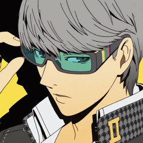
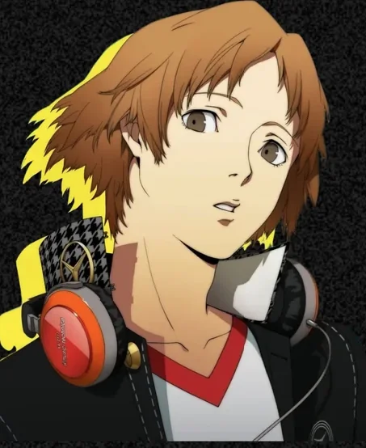
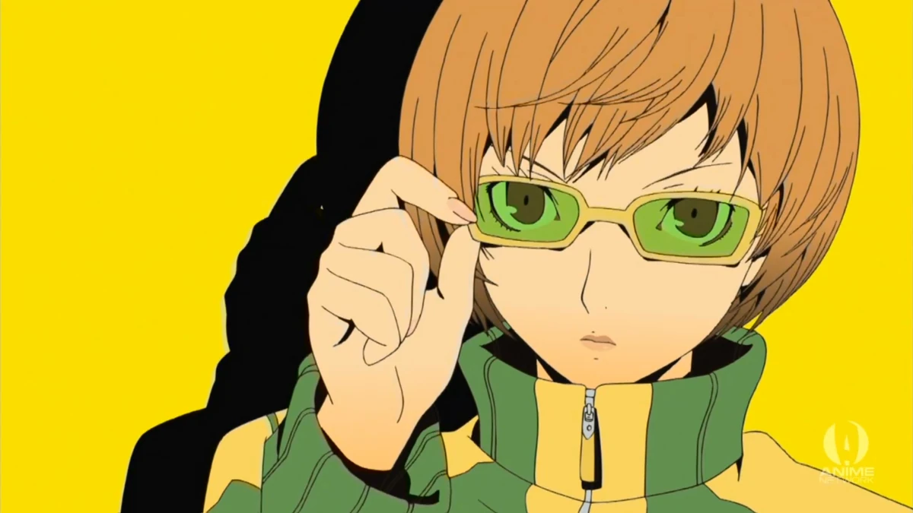
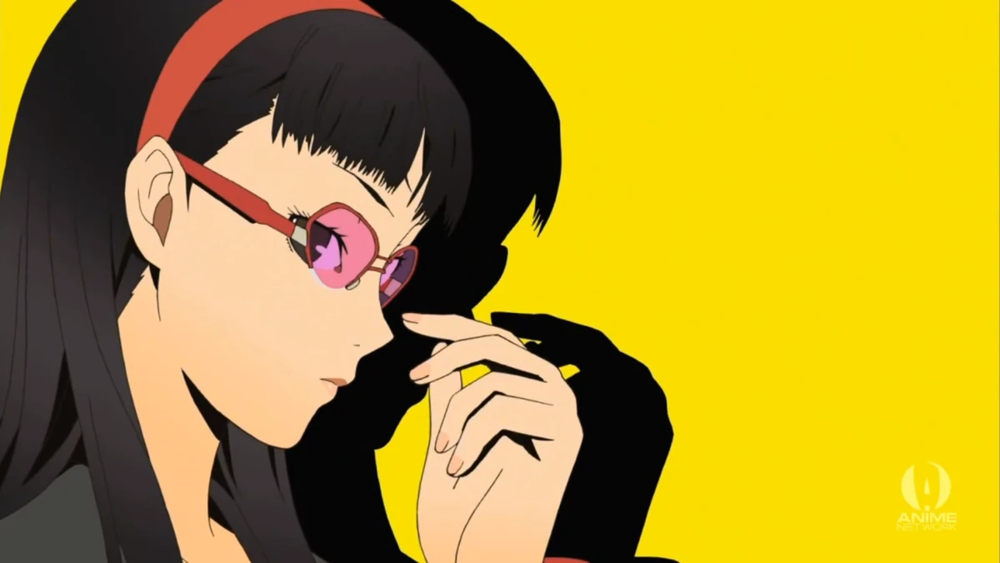
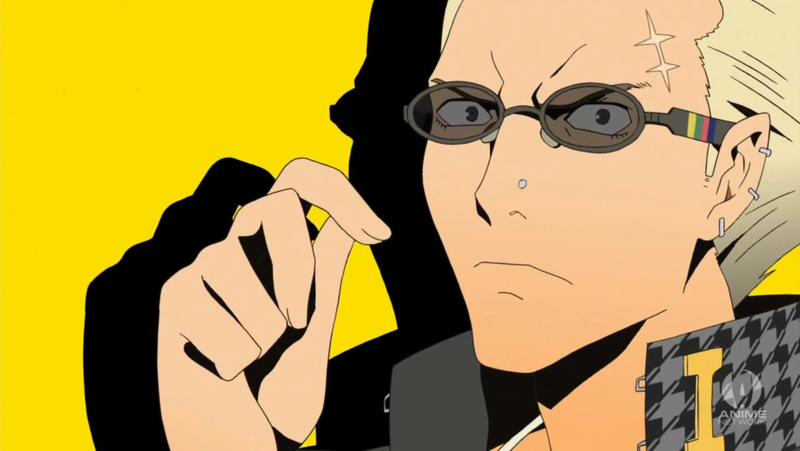
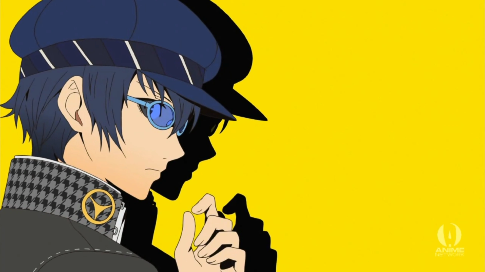
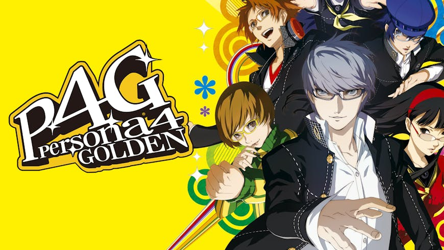
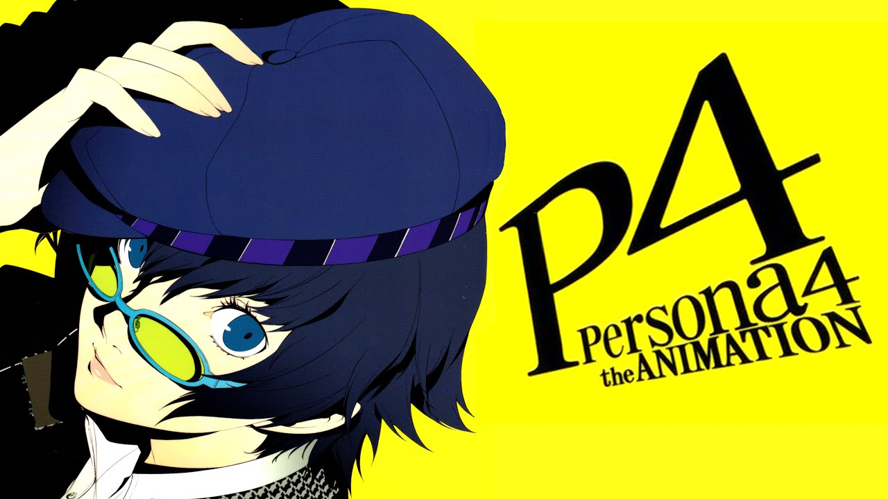
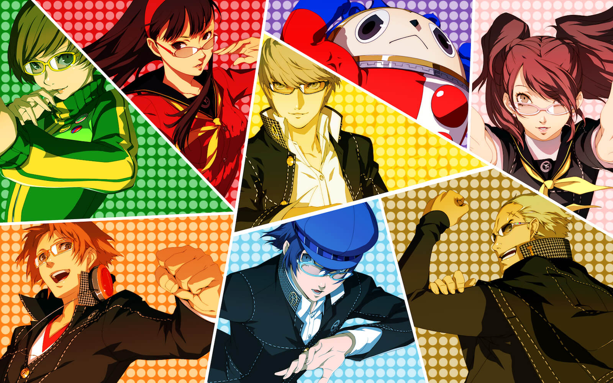

O Brilho da Verdade na Calmaria (2008)
<<<<<<< HEAD Lançado em 2008 para o PlayStation 2, Persona 4 pegou os sistemas de simulação social consagrados pelo seu antecessor e os banhou em uma estética pop, ======= Lançado em 2008 para o PlayStation 2, Persona 4 pegou os sistemas de simulação social consagrados pelo seu antecessor e os banhou em uma estética pop, >>>>>>> 1b26775e67600978a802972c975492810fbdc397 colorida e cheia de energia. Em vez dos cenários urbanos imponentes das capitais, o título aposta no charme nostálgico e na calmaria de uma cidadezinha do interior do Japão.
A trama começa quando um estudante da cidade grande se muda para morar com seu tio detetive na pacata Inaba. No entanto, a tranquilidade do lugar é estilhaçada por uma série de assassinatos bizarros em que as vítimas são encontradas mortas e penduradas em antenas de TV em dias de névoa densa.
O Midnight Channel e o Mundo da TV
Entre os estudantes de Inaba, corre o boato de uma lenda urbana: se você olhar para uma tela de televisão desligada à meia-noite em um dia chuvoso, o seu verdadeiro amor aparecerá na tela. <<<<<<< HEAD Esse fenômeno é conhecido como Midnight Channel (O Canal da Meia-Noite). ======= Esse fenômeno é conhecido como Midnight Channel (O Canal da Meia-Noite). >>>>>>> 1b26775e67600978a802972c975492810fbdc397
Ao investigar o boato, o protagonista descobre que possui a habilidade única de atravessar fisicamente a tela da televisão, entrando no Mundo da TV. Dentro desse universo envolto em névoa, os desejos e segredos mais vergonhosos e reprimidos das pessoas criam masmorras personalizadas. <<<<<<< HEAD Para salvarem as vítimas antes que a névoa chegue ao mundo real, os jovens precisam enfrentar e aceitar suas próprias Shadows (seus alter egos internos) para que elas finalmente despertem como Personas. ======= Para salvarem as vítimas antes que a névoa chegue ao mundo real, os jovens precisam enfrentar e aceitar suas próprias Shadows (seus alter egos internos) para que elas finalmente despertem como Personas. >>>>>>> 1b26775e67600978a802972c975492810fbdc397
Pilares do Jogo
Enfrentando a si mesmo
<<<<<<< HEADDiferente de outros jogos, aqui as Personas não despertam por pura força de vontade, mas sim quando os personagens têm a coragem de aceitar seus maiores defeitos e inseguranças expostos publicamente pelas Shadows.
=======Diferente de outros jogos, aqui as Personas não despertam por pura força de vontade, mas sim quando os personagens têm a coragem de aceitar seus maiores defeitos e inseguranças expostos publicamente pelas Shadows.
>>>>>>> 1b26775e67600978a802972c975492810fbdc397Investigação Interativa
Antes de entrar nas masmorras da TV para resgatar alguém, você precisa passar dias na cidade conversando com moradores locais, coletando pistas e cruzando informações para descobrir onde a vítima está escondida.
A Vida no Interior
Inaba transborda atividades acolhedoras. Você pode pescar no rio da cidade, cuidar de uma horta em casa com seu tio e prima, <<<<<<< HEAD pegar empregos de meio período ou comer a lendária tigela gigante de lamen na chuva.
======= pegar empregos de meio período ou comer a lendária tigela gigante de lamen na chuva. >>>>>>> 1b26775e67600978a802972c975492810fbdc397O Investigation Team

Yu Narukami (Protagonista)
O líder calmo e carismático da equipe. Transferido de Tóquio, ele ganha o poder da Wild Card
<<<<<<< HEAD
e lidera seus novos amigos para desvendar os crimes da cidade.
Sua Persona inicial é a icônica Izanagi.
Sua Persona inicial é a icônica Izanagi. >>>>>>> 1b26775e67600978a802972c975492810fbdc397

Yosuke Hanamura
O braço direito do protagonista.
<<<<<<< HEAD
Filho do gerente da grande loja de departamentos Junes, ele se sente entediado com a vida no interior,
mas encontra propósito na investigação.
Sua Persona é Jiraiya.
Sua Persona é Jiraiya. >>>>>>> 1b26775e67600978a802972c975492810fbdc397

Chie Satonaka
<<<<<<< HEADUma garota enérgica, apaixonada por filmes de Kung Fu, artes marciais e, acima de tudo, carne bovina.
Esconde sua insegurança sobre sua própria feminilidade.
Luta usando chutes poderosos e sua Persona é Tomoe.
Uma garota enérgica, apaixonada por filmes de Kung Fu, artes marciais e, acima de tudo, carne bovina.
Esconde sua insegurança sobre sua própria feminilidade.
Luta usando chutes poderosos e sua Persona é Tomoe.

Yukiko Amagi
<<<<<<< HEADMelhor amiga de Chie e herdeira da famosa e tradicional hospedaria Amagi Inn.
Inicialmente tímida, ela se sente sufocada pelo peso de ter seu futuro totalmente planejado por sua família.
Sua Persona é Konohana Sakuya.
Melhor amiga de Chie e herdeira da famosa e tradicional hospedaria Amagi Inn.
Inicialmente tímida, ela se sente sufocada pelo peso de ter seu futuro totalmente planejado por sua família.
Sua Persona é Konohana Sakuya.

Kanji Tatsumi
Um delinquente durão e intimidador de aparência rebelde, mas que secretamente ama costura,
bichos de pelúcia e artesanato. Ele luta contra o medo do julgamento dos outros sobre sua masculinidade.
<<<<<<< HEAD
Sua Persona é Take-Mikazuchi.
Sua Persona é Take-Mikazuchi. >>>>>>> 1b26775e67600978a802972c975492810fbdc397
Rise Kujikawa (Risette)
<<<<<<< HEADUma Pop Idol extremamente famosa no Japão que decide pausar a carreira e
fugir para Inaba para tentar viver como uma garota normal. Torna-se a navegadora e suporte analítico oficial da equipe.
Sua Persona é Himiko.
Uma Pop Idol extremamente famosa no Japão que decide pausar a carreira e
fugir para Inaba para tentar viver como uma garota normal. Torna-se a navegadora e suporte analítico oficial da equipe.
Sua Persona é Himiko.
Teddie (Kuma)
Uma criatura misteriosa que parece uma fantasia de urso vazia que vive dentro do Mundo da TV.
Ele ajuda a guiar o grupo e, eventualmente, manifesta uma forma humana loira e se junta à batalha.
<<<<<<< HEAD
Sua Persona é Kintoki-Douji.
Sua Persona é Kintoki-Douji. >>>>>>> 1b26775e67600978a802972c975492810fbdc397

Naoto Shirogane
O jovem "Príncipe Detetive" enviado a Inaba para ajudar a polícia a resolver os assassinatos.
Esconde o fato de ser uma garota para ganhar o respeito de corporações policiais machistas.
<<<<<<< HEAD
Usa armas de fogo e sua Persona é Sukuna-Hikona.
Usa armas de fogo e sua Persona é Sukuna-Hikona. >>>>>>> 1b26775e67600978a802972c975492810fbdc397
Guia de Plataformas & Mídias Expandidas
PlayStation 2 (Original)
O lançamento original em 2008. Foi um sucesso absurdo de vendas e crítica, <<<<<<< HEAD espremendo todo o poder técnico final do ciclo de vida do lendário PlayStation 2 com animações fluidas e cores vibrantes. ======= espremendo todo o poder técnico final do ciclo de vida do lendário PlayStation 2 com animações fluidas e cores vibrantes. >>>>>>> 1b26775e67600978a802972c975492810fbdc397

PS Vita & Portes Modernos (Golden)
<<<<<<< HEADA aclamada versão definitiva de 2012 para o portátil da Sony. =======
A aclamada versão definitiva de 2012 para o portátil da Sony. >>>>>>> 1b26775e67600978a802972c975492810fbdc397 Adicionou a nova personagem Marie, meses extras no calendário escolar, novos finais, animações e passeios de moto. Chegou ao PC e consoles modernos recentemente.
Persona 4 Revival (Próximo Lançamento)
<<<<<<< HEADO aguardado Remake da Atlus! Seguindo os passos de Reload, =======
O aguardado Remake da Atlus! Seguindo os passos de Reload, >>>>>>> 1b26775e67600978a802972c975492810fbdc397 o clássico de Inaba está sendo totalmente reconstruído do zero para plataformas modernas. Promete visuais de última geração, mecânicas de combate modernizadas e uma nova forma de reviver o mistério da névoa.

Persona 4: The Animation (2011)
Uma adaptação fenomenal em série de anime com 25 episódios. Ficou muito famosa por dar uma personalidade hilária e sarcástica ao protagonista (batizado aqui de Yu Narukami) e <<<<<<< HEAD adaptar fielmente os Social Links do jogo.
======= adaptar fielmente os Social Links do jogo. >>>>>>> 1b26775e67600978a802972c975492810fbdc397P4G: The Animation (2014)
<<<<<<< HEADUma nova série curta em anime de 12 episódios focada exclusivamente nos conteúdos inéditos da versão Golden do jogo, aprofundando o arco da personagem Marie e mostrando as opções do New Game Plus.
=======Uma nova série curta em anime de 12 episódios focada exclusivamente nos conteúdos inéditos da versão Golden do jogo, aprofundando o arco da personagem Marie e mostrando as opções do New Game Plus.
>>>>>>> 1b26775e67600978a802972c975492810fbdc397Mangá Oficial (Shuuji Sogabe)
<<<<<<< HEADA adaptação em quadrinhos oficial ilustrada de forma incrível pelo mesmo autor do mangá de Persona 3. =======
A adaptação em quadrinhos oficial ilustrada de forma incrível pelo mesmo autor do mangá de Persona 3. >>>>>>> 1b26775e67600978a802972c975492810fbdc397 O mangá batiza o protagonista pelo nome de Souji Seta e expande o mistério policial com ótimos detalhes extras.

Spin-offs (Arena / Dancing)
<<<<<<< HEADPersona 4 expandiu-se em jogos excelentes de outros gêneros: a duologia de jogos de luta de arcade =======
Persona 4 expandiu-se em jogos excelentes de outros gêneros: a duologia de jogos de luta de arcade >>>>>>> 1b26775e67600978a802972c975492810fbdc397 Persona 4 Arena / Ultimax, e o viciante jogo de ritmo e dança canon Persona 4: Dancing All Night para o PS Vita.